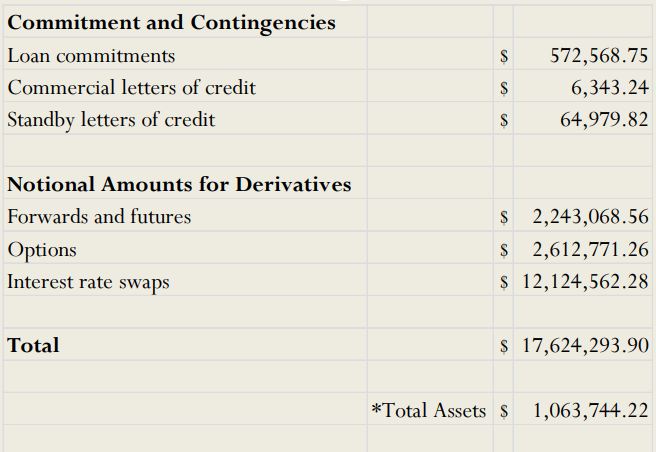
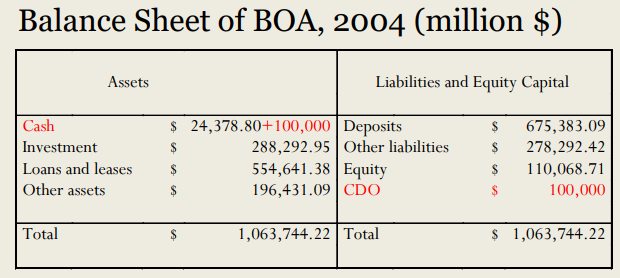
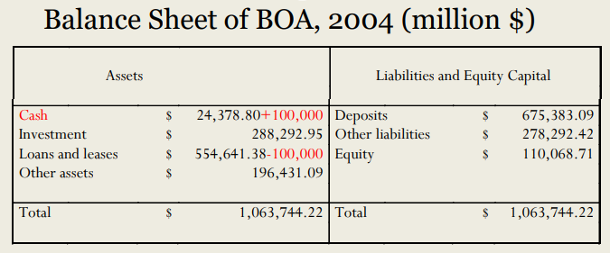
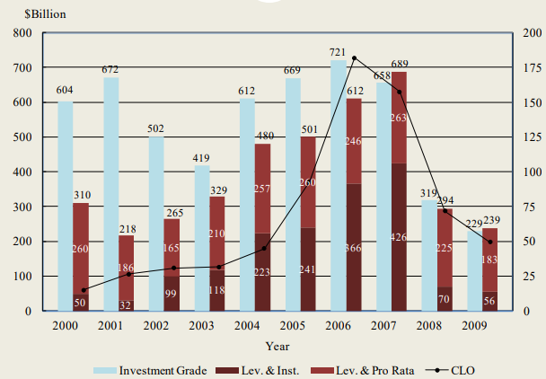
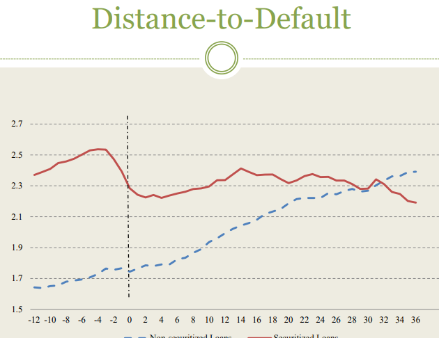
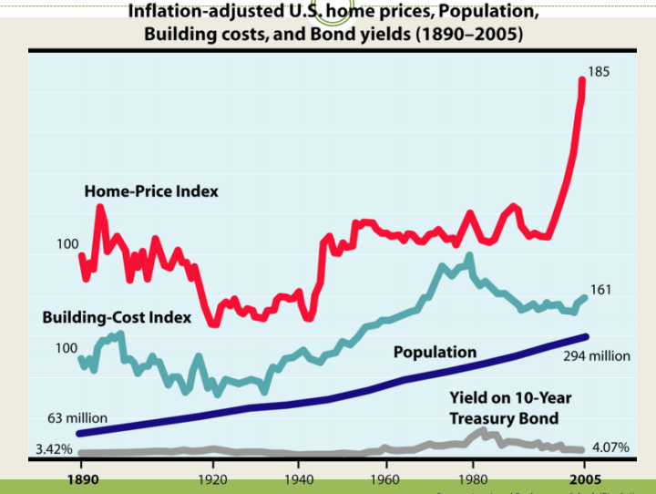
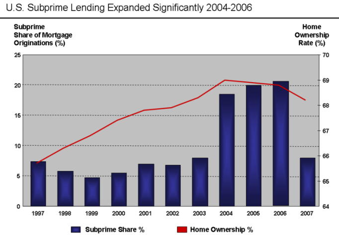
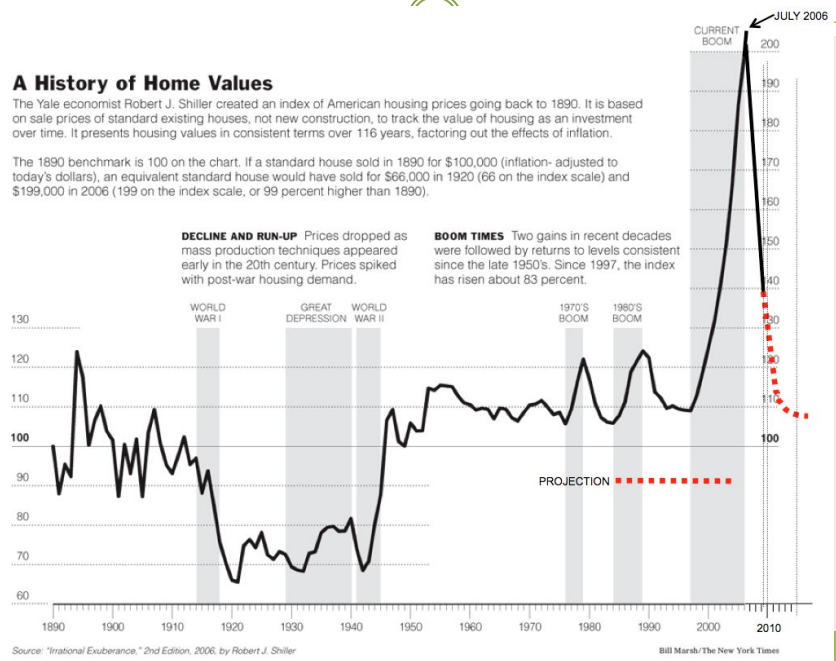

OBS are contingent assets and liabilities that affect the future, rather than the present, shape of an FI's balance sheet. The major types of OBS activities are:
Here is an example of a OBS financial statement. If a customer swipes a credit card, the assets for a bank would should a decrease in cash, and an increase in loan, thus satisfying the balance sheet equation.
OBS activities can also be designed to reduce risk through hedging (interest rate risk, foreign exchange risk). Large and most credit-worthy banks use OBS activities as a source of fee income.
Before the financial crisis, OBS activities could be dangerous. They can be used to artificially inflate profits or mislead investors. Investment vehicles such as collateralized debt obligations, subprime-mortgage securities, and credit default swaps are used to remove debts or risk from balance sheets. Firms would list the sale of these items as assets, but not list the financial obligations that come with them as liabilities. For example, a bank can list a loan as an asset, but then not kept in the books since it is securitized and sold off as an investment. The securitized debt is not kept on the bank's books.
Banks make loans and mortgages that they mark as assets on their balance sheet. They will see the debt to SPV's (Special Purpose Vehicle) which will then repackage the debt into a C.D.O. These C.D.O's will then be sold to investors. SPV's collect repayment on the loans and mortgages to pay returns to investors. What happens if the loans and mortgages default?
The investors who bought the C.D.O won't get their interest or principal. How is this marked on the balance sheet? Well SPV's are just a subsidiary of banks so the bank transfer to an SPV is not marked on a balance sheet, but the sale of the debt to investors is marked on the balance sheet.
The activity becomes an asset or a liability upon the occurrence of a contingent event, which may not be in the control of the bank. In most cases, the other party involved with the original agreement will call upon the bank to honor its original commitment.
Often the bank charges a fee when making the commitment. When the bank honors the commitment, the normal interest rate structure will apply to the commitment as it moves to the balance sheet.
Since the commitment doesn't appear on the balance sheet, the bank avoids the need to fund the asset with either deposits or equity. Thus, the bank avoids possible additional reserve requirement balances and deposit insurance premiums, while improving the earnings stream of the bank.
When a Financial Institution sells a CDO to a SPV, they should mark an increase in liabilities and equity capital.
However by using OBS Activities, they can just mark this sale on the assets side of the balance sheet. By limiting the liabilities on their balance sheet, they can avoid costly regulation.
Now there is a credit risk of the borrower in the assets side of the balance sheet. In many cases, the borrower will not utilize the commitment of the bank until the borrower faces a financial problem that may alter the credit worthiness of the borrower.
Moving the OBS activity to the balance sheet may have an impact on the interest rate and foreign exchange risk of the bank.
Banks would treat SPV's as a separate entity, so when they transferred the debt, they could mark it on the balance sheet as a increase in cash and a decrease on loans on the assets side of the balance sheet. This lets them avoid the increase in liabilities if they were to transfer the debt to a sister SPV. Banks want to avoid additional liabilities because liabilities attract regulators who want them to have cash on hand to be able to meet their obligations. This is how Bear Sterns defaulted.
OBS activities in this case increase the incentive for banks to issue loans without them accepting the risk. CEO's can now artificially inflate their profits and reap huge bonuses.
Here are the trends of corporate loan markets. As CDO's (black line) increase up until 2007, the volume of corporate loans increased.
Here the distance to default is shown which is metric for the risk of defaulting for a firm.
On the y-axis is the rate of defaulting. On the x-axis is the time period in months in which the loan was taken. Securitized loans are one's that the bank sells while non-securitized loans are the ones that banks keep. As time increases, risk increases, so banks don't want to hold the loans anymore.
Noting the 10-year treasury bond yield in gray, it has a decreasing trend from 2000 to the present. What caused this?
The dot-com bubble and 9-11 attacks put the US economy in a recession. Similar to the times during COVID, the FED lowered the treasury bond yield to help stimulate the economy. Low interest rates cause the cost of money to decrease, which also lowers the cost of borrowing. The low cost of borrowing attracts poor borrowers which can then increase risk of default by banks. With banks being able to pass on the risk to SPV's the low borrowing rates let banks make lots of loans.
Here we can see the proportion of subprime mortgages increased in the second half of the 2000's. With the cost of borrowing low, lots of people buy homes. Interest rates have to increase eventually or else you have the problem of inflation, so when interest rates increased in the second half of the 2000's, more people who had subprime mortgages had their monthly payments increase. As people defaulted on their mortgage payments, banks took people's houses as collateral and sold them on the secondary market in the process known as foreclosure. As more homes undergo foreclosure, housing prices drop.
What happens to the good borrowers who didn't default? Due to housing prices falling, good borrowers had their monthly payments not match the low price of their house. People decided to strategically default to avoid the high monthly payments for the low house price. Search contracting theory to see the theory of what to do when someone defaults.